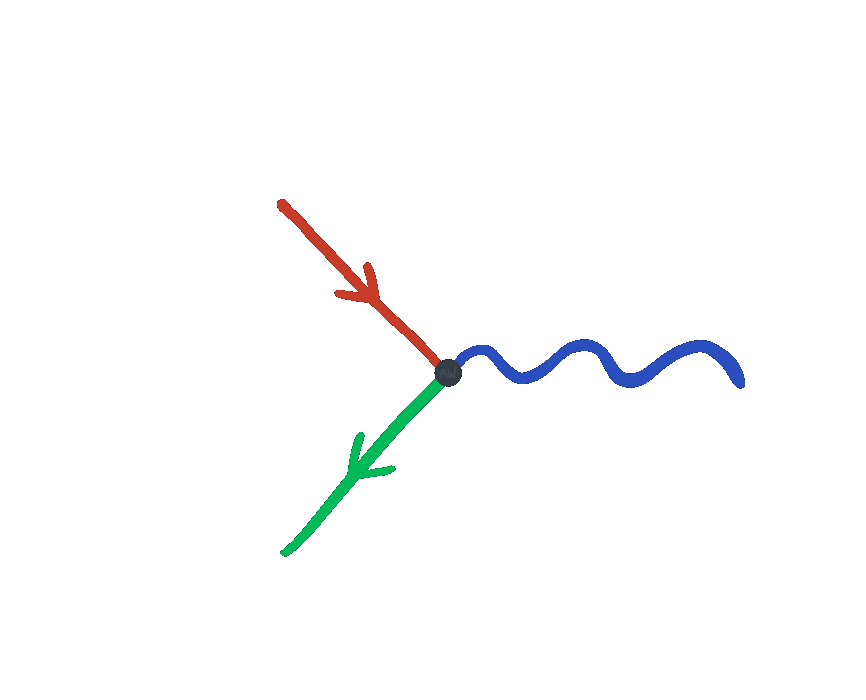
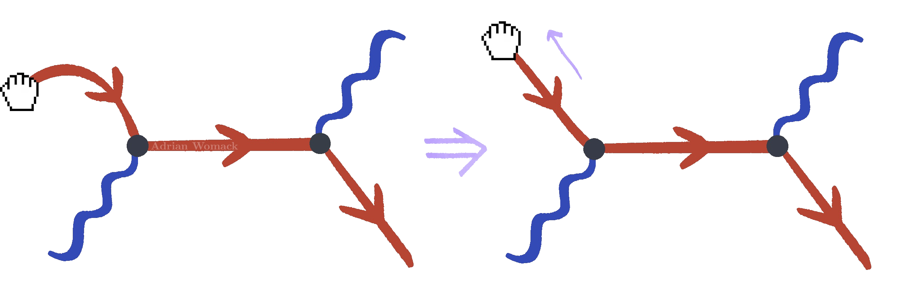

Particle Bites: The Quantum Casino
Written and Edited by: Cecilia Ochoa
Illustrated by: Adrian Womack
Created by: Flip Tanedo

Welcome to the Quantum Casino, where uncertainty and weirdness are the stars of the show.
The Cosmic Dealer invites you to play a game called QED.
QED is played with decks of three types of cards.
These three types of cards have either lines with arrows, squiggly lines, or interactions that connect lines.

You are given an initial and final state. These states are given as a set of cards.

Your goal is to connect the initial state cards with the final state cards with as few cards as possible. The result of this game is called a Feynman diagram.
Rules of QED
1. Arrow Direction
You can change the direction of an arrow card by rotating it. The overall direction of an arrow is whether it is pointing mostly to the right or to the left. You may not change the overall direction of the initial or final state cards.

2. Vertices and Arrows
The interaction cards connect two arrow lines and one wiggly line. You must have exactly one arrow pointing into the vertex, and one arrow pointing out of the vertex.

3. Rotating the interaction card lines
You are allowed to rotate the lines on the interaction card to help make connections.

4. Connected diagrams
A valid diagram is connected. This means that you cannot separate it into two or more sub-diagrams.

Tidying Up
Once we have a diagram, we can tidy it up by straightening out lines. It helps to imagine the arrow as a string you can pull taut.

All that matters is how lines are connected, not their curvature. This is true for internal arrows too:

There is room for some personal style, which usually shows up in diagrams with closed loops. For example, the following pairs of diagrams are equivalent:

While the simplest examples of Feynman diagrams have two initial cards, two final cards, and two interaction vertices, you can have any number of each element.
Here are examples of diagrams with three vertices and three final state cards:

Let’s take a quick look at some common pitfalls when drawing diagrams:

The Cosmic Dealer gets upset when you make these mistakes.
The best way to avoid these mistakes is through practice, so without further ado…
Let’s Play!

Round 1
The Cosmic Dealer presents you with the following initial and final states.

How can we connect these into a Feynman diagram?
One solution is to add an arrow card in the middle and connect using an interaction vertex on either side.

There is another solution:

This diagram has a curious vertical line.
Didn’t we say that arrows had to either be mostly pointing to the right or to the left? The vertical line is ambiguous, but that’s okay: it is an internal line rather than one of the initial or final states.
Unlike the initial/final states, internal lines are allowed to be ambiguous.
What does a vertical arrow mean?

A vertical line actually represents two different solutions at the same time: one where the line is “mostly left pointing” and another where it is “mostly right pointing”.
Here is another way we could connect these states:

Now we have two vertical lines, a squiggle, and four vertices. But remember the goal of QED is to connect the initial state cards with the final state cards with as few cards as possible. Even though this is a valid Feynman diagram, it uses more cards than we need, so it is not the winning diagram!
Now you try!
We’ll leave round 2 up to you.
Take a look at the card setup below. How can you connect the states into a valid Feynman diagram?

Now that we’ve learned the rules of QED, what does it all mean? 0 How exactly do we go from lines and squiggles to theoretical particle physics?
This and more will all be answered in the next post!